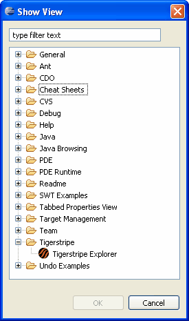

The Tigerstripe Explorer provides an explorer view of all Tigerstripe projects in the current workspace. Similar to the Eclipse Package Explorer, each Tigerstripe project is represented by a tree-like structure with the following components:
By default the Tigerstripe Explorer appears on the left-handside of the Tigerstripe Perspective, as shown below:
Complete the following procedure to open the Tigerstripe Explorer

© copyright 2005, 2006, 2007 Cisco Systems, Inc. - All rights reservedAlthough both the Tigerstripe Explorer and the Eclipse Package Explorer may look very similar, and share a lot of the same functionalities, the following differences are worth highlighting:
- Tigerstripe projects only: the Tigerstripe Explorer filters out any project that is not a Tigerstripe project.
- Artifact Labels: the Tigerstripe Explorer displays all artifacts within the project packages with their corresponding icons.
- Access to Artifact Editors: by default, when trying to open a Tigerstripe Artifact from the Tigerstripe Explorer, the corresponding specific Artifact Editor is used.
- Publish menu: the Tigerstripe Explorer adds a publish menu option that provides access to Tigerstripe specific publish functionalities.